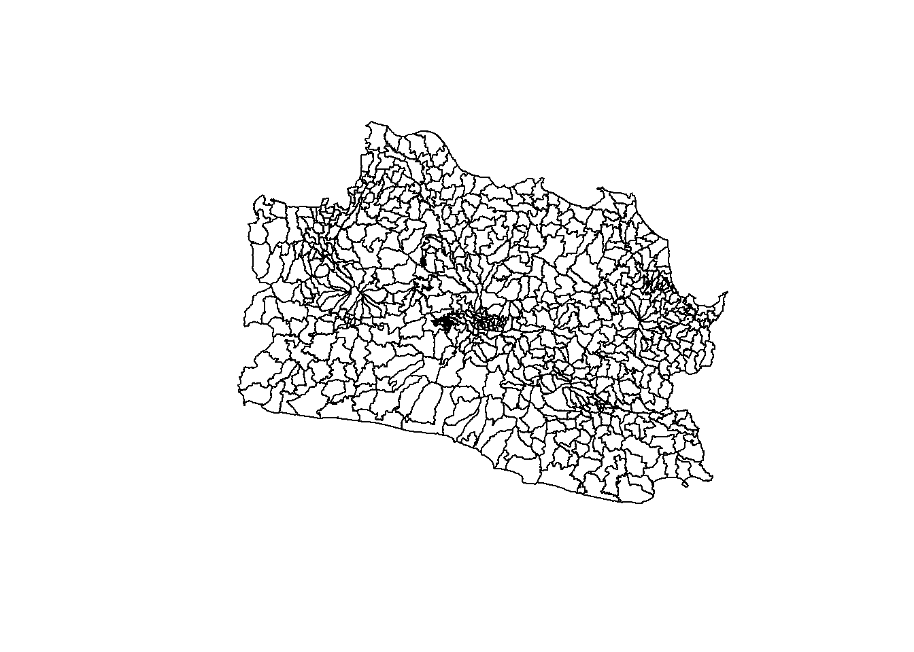
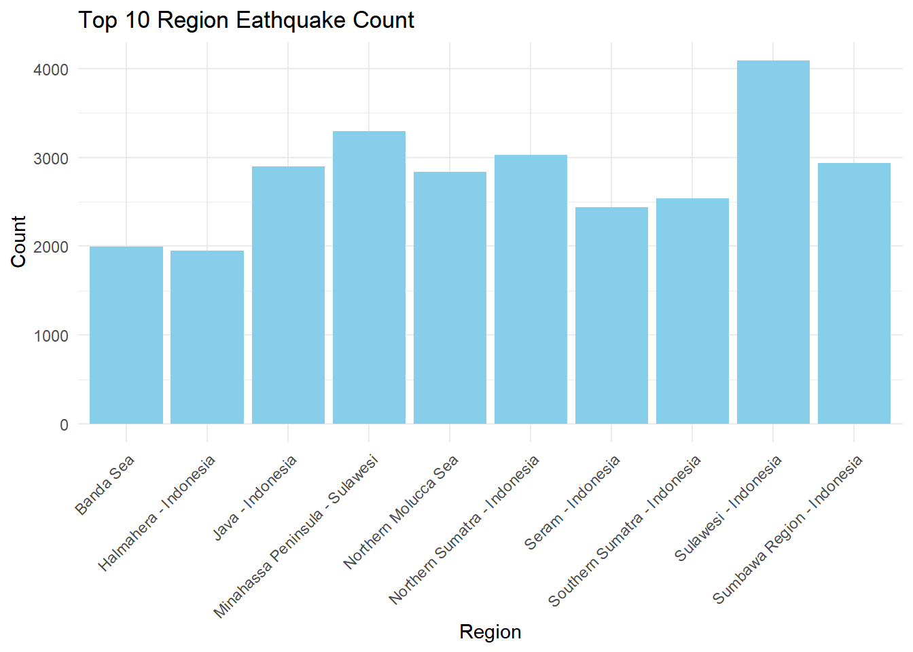
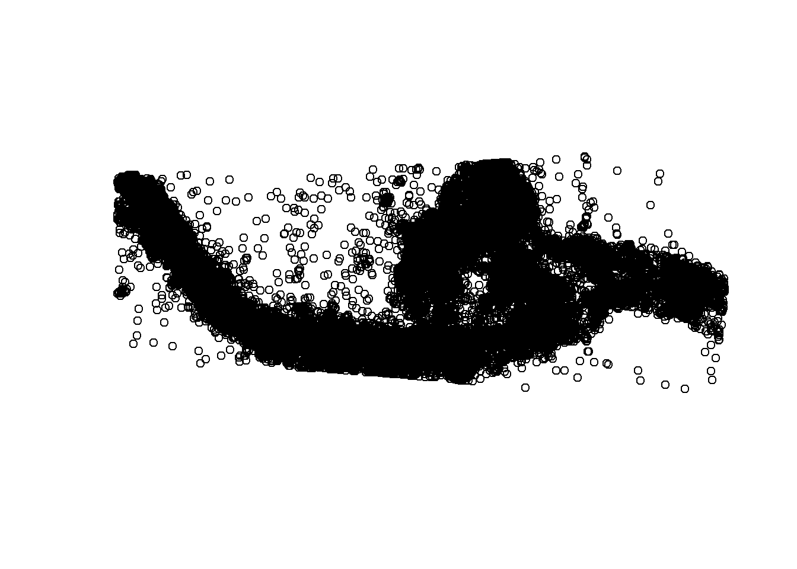
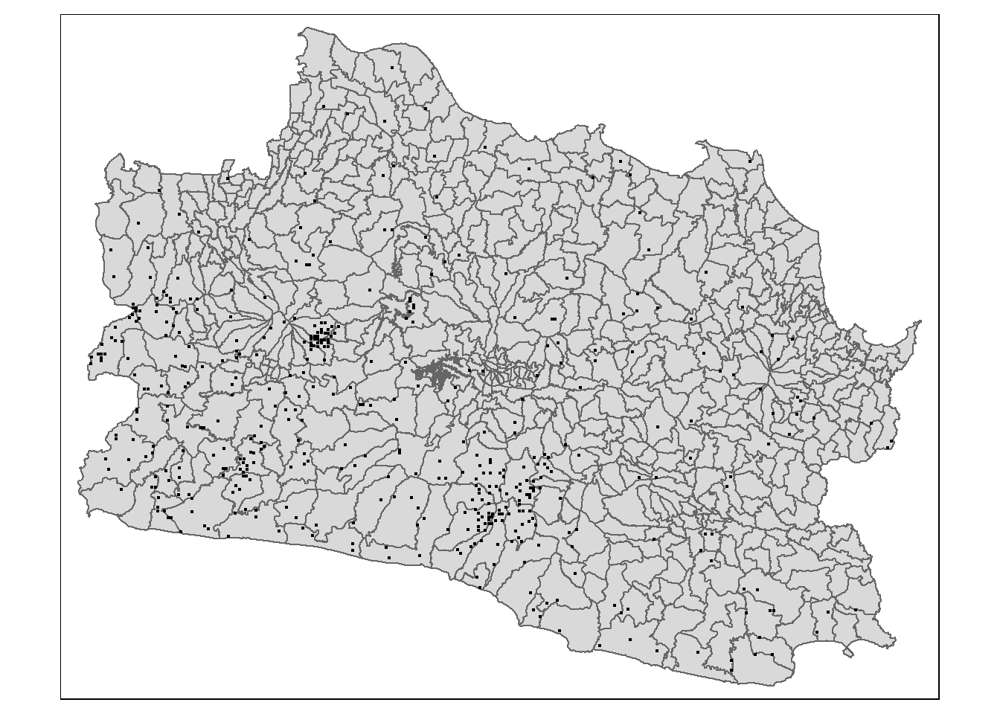

pacman::p_load(sf, spded, sfdep, tmap, tidyverse, plotly, Kendall)Take-home Exercise 3: Application of Spatial and Spatio-temporal Analysis Methods to Discover the Distribution of Dengue Fever in Tainan City, Taiwan
Checking data
Importing Geospatial Data
indonesia <- st_read(dsn = "data/geospatial/idn_adm_bps_20200401_shp",
layer = "idn_admbnda_adm3_bps_20200401")Reading layer `idn_admbnda_adm3_bps_20200401' from data source
`C:\jaymieseet\IS415-GAA-JS\Take-home_Ex\Take-home_Ex03\data\geospatial\idn_adm_bps_20200401_shp'
using driver `ESRI Shapefile'
Simple feature collection with 7069 features and 16 fields
Geometry type: MULTIPOLYGON
Dimension: XY
Bounding box: xmin: 95.01079 ymin: -11.00762 xmax: 141.0194 ymax: 6.07693
Geodetic CRS: WGS 84Extracting only West Java regions
west_java <- indonesia[indonesia$ADM1_EN == "Jawa Barat", ]west_java <- st_transform(west_java, crs = 23830)plot(st_geometry(west_java))
indo_earthquake <- read_csv("data/aspatial/katalog_gempa.csv")head(indo_earthquake)# A tibble: 6 × 13
tgl ot lat lon depth mag remark strike1 dip1 rake1 strike2
<date> <time> <dbl> <dbl> <dbl> <dbl> <chr> <dbl> <dbl> <dbl> <dbl>
1 2008-11-01 21:02:43 -9.18 119. 10 4.9 Sumba… NA NA NA NA
2 2008-11-01 20:58:50 -6.55 130. 10 4.6 Banda… NA NA NA NA
3 2008-11-01 17:43:12 -7.01 107. 121 3.7 Java … NA NA NA NA
4 2008-11-01 16:24:14 -3.3 128. 10 3.2 Seram… NA NA NA NA
5 2008-11-01 16:20:37 -6.41 130. 70 4.3 Banda… NA NA NA NA
6 2008-11-01 14:47:00 -7.37 105. 18 3.3 Java … NA NA NA NA
# ℹ 2 more variables: dip2 <dbl>, rake2 <dbl># Convert to sf object
indoEarthq_sf <- st_as_sf(indo_earthquake, coords = c("lon", "lat"), crs = "+proj=longlat +datum=WGS84") # Transform the geometry to EPSG:23830
indoEarthq_sf <- st_transform(indoEarthq_sf, crs = "+init=EPSG:23830")indoEarthq_filter <- indoEarthq_sf %>%
filter(tgl >= as.Date("2019/01/01") & tgl <= as.Date("2023/12/31"))# Group by the 'remark' column and calculate the count of each type
remark_counts <- indoEarthq_filter %>% group_by(remark) %>%
summarise(count = n())
# View the resulting count of each type in the 'remark' column # Sort the data frame by count in descending order and select the top 10 rows
top_10_remark <- remark_counts %>%
arrange(desc(count)) %>%
head(10)
# Plot a bar graph
ggplot(top_10_remark,
aes(x = remark, y = count)) +
geom_bar(stat = "identity", fill = "skyblue") +
labs(title = "Top 10 Region Eathquake Count",
x = "Region",
y = "Count") +
theme_minimal() +
theme(axis.text.x = element_text(angle = 45, hjust = 1))
plot(st_geometry(indoEarthq_sf))
java_earthq <- st_intersection(indoEarthq_filter, west_java)
java_earthqSimple feature collection with 813 features and 27 fields
Geometry type: POINT
Dimension: XY
Bounding box: xmin: 1522045 ymin: 619505.7 xmax: 1792451 ymax: 798303.7
Projected CRS: DGN95 / Indonesia TM-3 zone 46.2
# A tibble: 813 × 28
tgl ot depth mag remark strike1 dip1 rake1 strike2 dip2
* <date> <time> <dbl> <dbl> <chr> <dbl> <dbl> <dbl> <dbl> <dbl>
1 2020-03-22 20:27:05 91 3.5 Java - Ind… NA NA NA NA NA
2 2022-09-03 02:29:58 109 2.5 Java - Ind… NA NA NA NA NA
3 2023-01-11 05:20:19 16 2.5 Java - Ind… NA NA NA NA NA
4 2022-03-26 17:55:44 23 2.3 Java - Ind… NA NA NA NA NA
5 2021-06-07 00:18:16 142 3 Java - Ind… NA NA NA NA NA
6 2020-02-05 02:10:44 10 1.6 Java - Ind… NA NA NA NA NA
7 2020-09-21 21:11:48 23 2.3 Java - Ind… NA NA NA NA NA
8 2021-03-19 00:06:50 10 3.4 Java - Ind… NA NA NA NA NA
9 2022-11-26 14:03:09 12 1.7 Java - Ind… NA NA NA NA NA
10 2019-05-04 18:59:32 40 2.6 Java - Ind… NA NA NA NA NA
# ℹ 803 more rows
# ℹ 18 more variables: rake2 <dbl>, Shape_Leng <dbl>, Shape_Area <dbl>,
# ADM3_EN <chr>, ADM3_PCODE <chr>, ADM3_REF <chr>, ADM3ALT1EN <chr>,
# ADM3ALT2EN <chr>, ADM2_EN <chr>, ADM2_PCODE <chr>, ADM1_EN <chr>,
# ADM1_PCODE <chr>, ADM0_EN <chr>, ADM0_PCODE <chr>, date <date>,
# validOn <date>, validTo <date>, geometry <POINT [m]>length(unique(java_earthq$ADM3_EN))[1] 141Point with Polygon Join: If west_java contains polygon geometries and java_earthq contains point geometries, and you perform a spatial join to find points within polygons, the resulting dataset will likely have polygon geometries. This is because the join operation will match points to polygons, resulting in the polygons being retained.
java_earthq <- java_earthq %>%
mutate(year = as.character(year(tgl)),
month = as.character(month(tgl)))tmap_mode('plot')
tm_shape(west_java)+
tm_polygons()+
tm_shape(java_earthq)+
tm_dots()
java_earthq_count <- java_earthq %>%
group_by(ADM3_EN, year, month) %>%
summarize(total_cases = n()) %>%
ungroup() %>%
st_drop_geometry()java_earthq_count <- java_earthq_count %>%
mutate(month_year = paste(.$year, .$month, sep = "_")) %>%
select(-year, -month)length(unique(west_java$ADM3_EN))[1] 584sum(duplicated(west_java$ADM3_EN))[1] 46west_java_unique <- distinct(west_java, ADM3_EN, .keep_all = TRUE)sum(duplicated(west_java_unique$ADM3_EN))[1] 0# Create a vector of all months
months <- sprintf("%02d", 1:12)
# Create a vector of all years
years <- as.character(2019:2023)
# Create a template dataframe with all possible combinations of regions, years, and months
template_df <- expand.grid(ADM3_EN = unique(west_java_unique$ADM3_EN),
year = years,
month = months,
stringsAsFactors = FALSE)
# Combine year and month to create month_year column
template_df$month_year <- paste(template_df$month, template_df$year, sep = "_")
# Remove year and month columns
template_df <- template_df[, !names(template_df) %in% c("year", "month")]
# Left join with original dataframe
java_eq_df <- left_join(template_df, java_earthq_count, by = c("ADM3_EN", "month_year"))
# Replace NA values in total cases column with 0
java_eq_df$total_cases[is.na(java_eq_df$total_cases)] <- 0java_eq_df <- as_tibble(java_eq_df)#java_eq_df$month_year <- as.yearmon(data$month_year, format = "%m_%Y")#java_st <- spacetime(.data = java_eq_df, .geo = west_java_unique, "ADM3_EN", "month_year")
#is_spacetime_cube(tainan_st)